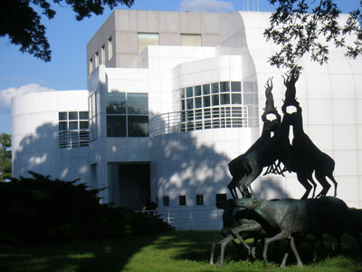

Historic Black Hills gateway city featuring museums, public art, outdoor recreation, presidential sculptures, and access to nearby national landmarks.
How to Get There
From Sioux Falls (348 mi): Take I-90 W across South Dakota, continue through the Black Hills region, and follow exits directly into the downtown and tourism districts.
Overview
Rapid City is the second-largest city in South Dakota and the gateway to the Black Hills, on the eastern edge of the range where the hills meet the Great Plains. It is known as the "Gateway to the Black Hills" and the "City of Presidents" because of the life-size bronze statues of U.S. presidents on its downtown street corners. It is the closest city to Mount Rushmore, about 25 miles to the southwest, as well as to Crazy Horse Memorial, Custer State Park, Badlands National Park, and Wind Cave and Jewel Cave National Parks.
Visitors come to Rapid City as a base for exploring the Black Hills and the Badlands, and for the downtown with its presidents' statues, restaurants, and breweries. They also come for the Journey Museum, Art Alley, the South Dakota Air and Space Museum, and Dinosaur Park, and it is the closest major airport to the area. Each August, the Sturgis Motorcycle Rally, about 30 miles north, brings hundreds of thousands of riders through the city.
History
The Lakota people consider the Black Hills sacred, and the Treaty of Fort Laramie of 1868 guaranteed the area to them, but the discovery of gold by Custer's expedition in 1874 led to a gold rush. Rapid City was founded in 1876 by a group of disappointed miners led by John Brennan, who found that supplying the mining camps was more profitable than mining. The city grew as the railroad arrived in 1886 and the Black Hills became a tourism and ranching center, and Ellsworth Air Force Base, established in 1942, became a major employer. A devastating flood on Rapid Creek in June 1972 killed 238 people, and the area along the creek was turned into a greenway park.
Sightseeing and Popular Landmarks
Downtown Rapid City has the City of Presidents statues, with more than 40 bronze statues of presidents on street corners, and Art Alley is a colorful alley of graffiti art. The Journey Museum tells the story of the Black Hills from geology to the Lakota, and the Museum of Geology at the School of Mines has fossils and minerals. Dinosaur Park has concrete dinosaurs from the 1930s on a hill overlooking the city, and the Berlin Wall segment and the South Dakota Air and Space Museum are other attractions. Mount Rushmore, Crazy Horse Memorial, and Reptile Gardens are a short drive away.
Culture and Museums
The Journey Museum & Learning Center combines several museums, covering geology, Lakota culture, pioneer history, and archaeology. The Museum of Geology has one of the best collections of Black Hills minerals and fossils, and the South Dakota Air and Space Museum at Ellsworth Air Force Base has aircraft and missiles. The Dahl Arts Center has a cyclorama, and the Rapid City Civic Center hosts concerts and events.
Parks
Rapid City has more than 70 parks. Canyon Lake Park has a lake with paddle boats, and Memorial Park, Founders Park, and the Rapid Creek Greenway offer paths and recreation. Storybook Island is a free children's park, and Skyline Drive has a lookout over the city. The Black Hills National Forest, Custer State Park, Sylvan Lake, and Spearfish Canyon are within an hour, and the Mickelson Trail is a 109-mile rail trail for biking and walking.
Seasons and Weather
Rapid City has a semi-arid continental climate. Summers are warm, with highs in the 80s°F and thunderstorms in the afternoon, and winters are cold, with highs in the 30s°F and about 40 inches of snow, though chinook winds can bring sudden warm spells. Summer is the busiest season, especially around the Sturgis Rally in August, and fall is quieter and good for wildlife and color in the hills.
This article uses material from Wikipedia as well as information from official tourism and institutional sources. Key references include Visit Rapid City, Travel South Dakota, Journey Museum & Learning Center, Mount Rushmore National Memorial, and National Weather Service Rapid City. Wikipedia material is from the article "Rapid City, South Dakota", and is available under the Creative Commons Attribution-Share-Alike License 3.0.
Featured Locations

Des Moines Guy, CC BY-SA 3.0, via Wikimedia Commons; Image Size Adjusted

Art Alley
Public alleyway transformed into a vibrant open-air gallery featuring ever-changing street art, murals, and graffiti by local and visiting artists.
Des Moines Guy, CC BY-SA 3.0, via Wikimedia Commons; Image Size Adjusted
Berlin Wall
Outdoor historical exhibit featuring two original Berlin Wall segments and interpretive panels that explore the Cold War and the wall’s global significance.
Des Moines Guy, CC BY-SA 3.0, via Wikimedia Commons; Image Size Adjusted
Journey Museum
Interactive museum combining archaeology, paleontology, Native American culture, and pioneer history through immersive exhibits and educational programs.
Des Moines Guy, CC BY-SA 3.0, via Wikimedia Commons; Image Size Adjusted
Museum of Geology
Educational museum featuring fossils, minerals, and geological exhibits that explore the natural history of the Earth and the Black Hills region.
AlexiusHoratius, CC BY-SA 3.0, via Wikimedia Commons; Image Size Adjusted

South Dakota Air and Space Museum
Indoor and outdoor museum featuring Cold War-era bombers, intercontinental ballistic missiles, and aerospace exhibits housed in historic aircraft alert hangars.